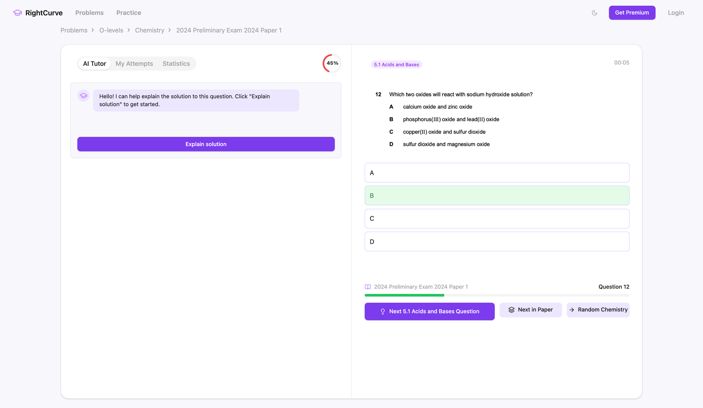
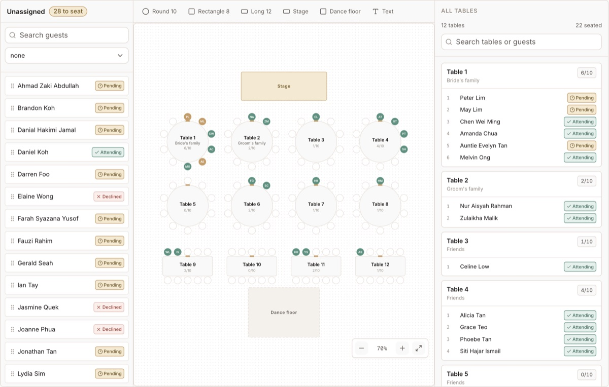

Lim Yee Han
I'm a software engineer in Singapore. I spent five years building backend systems and developer tools at TikTok, Firerock, Starboard Ventures and Crypto.com. Since March 2026 I've been working directly with businesses: I sit with the people who do the work, find out how it's really done, and build the system for it.
I'm looking for forward deployed or customer-facing engineering roles at AI companies.
limyeehan@gmail.com · github.com/YeeeeeHan · Resume (PDF)
Compliance screening for a Singapore financial institution
I have worked independently as a consulting engineer with the compliance team of a Singapore financial institution since June 2026. I ran discovery on their KYC screening and mapped onboarding, adverse-media screening, periodic review and audit, including how the work splits between the front office and compliance. The front office ran a Google search for each party in a deal, the evidence was saved to files, and the same names were entered again into a separate monitoring system.
I built a prototype of that workflow and took it to the team, asking them to correct anything that did not match how they work. Code runs the Google searches through Bright Data's Browser API, which fetches the full results page and the articles it lists, and checks the hard facts. The OpenAI Decisions API (gpt-6-luna) quickly filters out paywalls and unreadable pages, and a gpt-6.1-sol judge on the Responses API marks each article as a true hit, a false hit or needs review.
When the team later walked me through their screening step by step, it showed that the front office had raised slow, manual screening as the problem, while the compliance team, the sponsor, needed observability and an audit trail. The scope narrowed to their web screening and its audit trail. An AI first pass judges every result and drafts mitigants, and human reviewers in the loop decide the harder cases. Every Google results page, the source their reviewers trust, is captured as evidence, and every decision is logged with its reason.
In a live run on 10 names, a completed search took a median of 3 minutes 22 seconds. The team told me that screening 10 to 20 names takes a full day by hand. The compliance team is championing it internally.
ArtAgain
ArtAgain is an art resale business. I have worked with them independently as a consulting engineer since March 2026. They asked for an AI art valuation tool to reduce the research behind each price, and for an AR tool that lets buyers see an artwork on their own wall.
My first valuation prototype was an AI agent that searched the web for similar works and proposed a price. The results were unreliable, because I had chosen the approach before understanding the task.
I then ran discovery with three staff and mapped how a seller gets from a first WhatsApp inquiry, through lead qualification and negotiation, to a live Shopify listing, including who decides each step and where work changes hands. Several steps existed only in chat messages and in people's memory, so I fixed the workflow before introducing a new valuation tool.
I built a PostgreSQL database, Directus operator views and a Convex listing collaboration tool connected to Shopify, and refined each version with the staff on real seller submissions. I kept Shopify as the place the staff already work. The new system, with Shopify's own Draft status, replaced the listings staff's manual Google Sheet. Listing an artwork went from two weeks to three days.
For the valuation tool, I asked the staff member who does the pricing to walk me through her process. She opens Artprice, looks up the artist, and filters by medium, edition, size and year until a few comparables remain. None of those steps needs a model. The work is repetitive, and the repetition was what the team wanted removed.
The second version uses explicit filters, with a short note explaining why each comparable matched, and she still sets the price. AI is used for one task. The database lists every auction result for an artist, so past sales of the work being priced are mixed with sales of the artist's other works. Rules can flag likely matches by title and size, but confirming that two records show the same piece requires comparing the photos, and that comparison is the one step handed to a Gemini vision model.
My takeaway is to observe how the work is done before choosing the technology, to use rules for routine steps, and to keep AI for the questions rules cannot answer.
I also built a "view on your wall" page for iPhone. A buyer opens a listing's link, taps one button and sees the artwork on their own wall at its recorded size, with no app to install. It reads the photo and size from the Shopify feed.
Crypto.com · Innovation Team, 2024 to 2026
I was a senior software engineer on the Innovation Team, working on Crypto.com's developer platform for Cronos. On its AI agent, I worked on the LangChain and LangGraph integration that lets it use tools across several steps, with on-chain tools built alongside the Cronos Explorer team.
A conversation with the agent hit the model's 8,192-token limit in November 2024. I traced how each conversation's history grew, planned a token budget and a summary of older messages, and in June 2025 added configurable memory limits to the service.
In late 2025 I built agent wallet and payment features: EIP-7702 session keys so a new wallet with no CRO could give an agent limited rights, passkey sign-in for smart accounts, x402 payments inside the agent as a contributor to the Cronos x402 Facilitator, and an agent trading playground.
I built the platform's TypeScript and Python clients, the Python one from its first commit, added the DeFi, exchange and CronosID modules to both, and co-maintained the TypeScript AI agent client. Each TypeScript package sees about 3,000 npm downloads a month (October 2026). I also built the getting-started examples developers begin from, and added DeepSeek and Mistral support to them.
I audited our own SDK in January 2026. My notes asked what it did that LangGraph didn't already make easy. I proposed a core of four dependencies in place of more than a hundred, with tools that work in any agent framework. The migration was deferred.
Around the agent I worked on the developer dashboard, the services behind it and the playground UI, and built the example transaction app in the public SDK examples. Outside the SDK, I led full-stack maintenance of the official Cronos website.
TikTok · Video Infrastructure, 2022, after a 2021 internship
I was a software engineer on the team that runs video-on-demand playback. I maintained the core playback service, which handles 350,000 requests a second, and was on call for it. Behind it, I built the video-metadata reconciliation service in Go, with RocketMQ and MySQL.
For internal users I built Thrift RPC endpoints to serve their requests, and I wrote scripts that made configuration changes quicker to create.
Other work
Repl · Starboard Ventures, 2023 to 2024
A DeFi protocol on Filecoin that reached USD 15M in deposits, since renamed Parasail. I shipped its upgradeable smart contracts and designed pFIL, a rebasing token that pays holders yield without a claim step. I built the multisig dashboard the founders used to approve protocol changes with hardware wallets, and designed how the signers worked together.
Firerock Capital · 2023
Our Docker build took 400 seconds. I got it to 10 by caching go.mod as its own layer and mounting the Go build cache. I also built the Go OAuth service that links a player's social accounts to their game account; the game was still in internal testing when I left.
Projects
RightCurve
I built RightCurve, MCQ practice for Singapore O- and A-Level students, with Gemini explanations and PostHog analytics.

CasePilot · December 2025 to January 2026
I built CasePilot for a litigation lawyer who assembles bundles and affidavits. Every document becomes a labelled exhibit, the affidavit refers to those labels, and when the order changes the labels change. CasePilot is a desktop editor for that work. It runs on the lawyer's own machine, treats a case like a code repository, keeps each exhibit as an object so labels renumber when the bundle is reordered, and has a Cmd+K search over the evidence that works offline. It is built with Tauri, Rust and React, across 283 commits.
The first plan was AI drafting. The rule I kept instead was to not use AI to write the law, and to use it to index the evidence. The aim was for the app to read each file and suggest its description and date, so that finding a title inside a PDF becomes checking one, and the legal judgement stays with the lawyer.
Before building I wrote down the questions I needed the lawyer to answer: what the top three features would be, how a bundle relates to an affidavit, what software he uses today, and whether his office blocks the internet. The last commit is from January 2026.
Wedding RSVP · June to August 2026
In June 2026 I interviewed two people who had recently planned their own weddings in Singapore. Both had used WithJoy. Changing questions and amending responses was clunky, Chinese names were a problem, and the bigger cost came after the RSVPs. One of them spent about ten hours cross-referencing a spreadsheet to find who had not replied, and turning the yes list into the seating sheet the hotel needs meant more spreadsheet work. I wrote up their current workflow from guest sheet to hotel handoff, then built an operations workspace on Next.js and Supabase with a guest list, RSVP questions per event, an invitation preview per guest, response amendments, seating and a hotel-ready export. A logic audit on 14 July 2026 said no-go for real guest data, and I fixed every P0 and P1 finding the next day. The project is paused; a demo is live.

How I work now
I build with coding agents. Claude Code and Codex run from one shared set of instructions, each with its own scoped commits and a plan kept in the repository. In 2026 I've made over 2,600 contributions on GitHub, most of them in private repositories, against 515 in all of 2025.
Contact
Email me at limyeehan@gmail.com, or find me on LinkedIn.